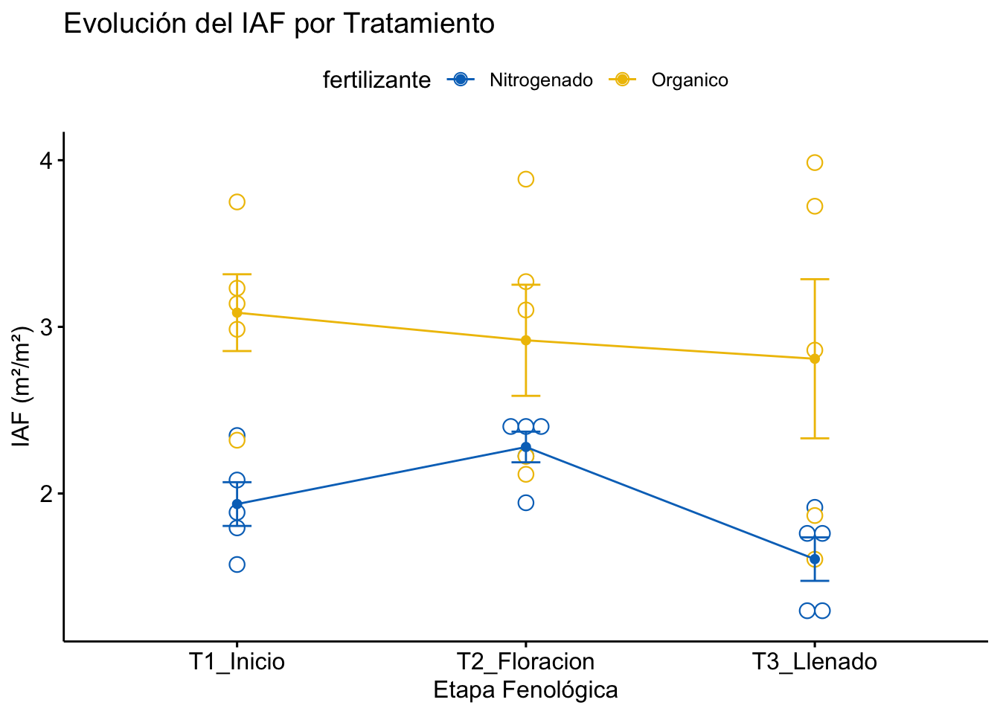

El ANOVA de medidas repetidas se utiliza cuando realizas múltiples observaciones sobre la misma unidad experimental (la misma planta, la misma parcela, el mismo fruto).
En el mundo del fitomejoramiento y la agronomía, el tiempo no es solo una variable; es el escenario donde ocurre la magia (y el estrés). Si estás midiendo la altura de la misma planta de maíz cada semana, o evaluando la severidad de una enfermedad en el mismo lote durante un mes, no puedes usar un ANOVA convencional.
¿Por qué? Porque tus datos están “emparentados”. Aquí es donde entra el ANOVA de Medidas Repetidas (RM-ANOVA).
¿Qué es y por qué debería importarte?
A diferencia del ANOVA de una vía, donde comparas grupos independientes, el ANOVA de medidas repetidas se utiliza cuando realizas múltiples observaciones sobre la misma unidad experimental (la misma planta, la misma parcela, el mismo fruto).
En estadística, decimos que las mediciones están correlacionadas. Si una planta de soja es genéticamente vigorosa en la semana 1, es muy probable que siga siendo vigorosa en la semana 2. Ignorar esta correlación es un pecado capital en la ciencia de datos agrícolas, ya que estarías desperdiciando información valiosa y aumentando el error experimental.
La anatomía del modelo
En un diseño de medidas repetidas, el modelo lineal se descompone de una manera especial para separar la variabilidad individual de la variabilidad del tratamiento:
\[Y_{ij} = \mu + \pi_i + \tau_j + \epsilon_{ij}\]
Donde:
\(\mu\): Media general.
\(\pi_i\): El efecto del sujeto (tu planta o parcela), tratado como factor aleatorio.
\(\tau_j\): El efecto del tiempo o tratamiento (factor intra-sujeto).
\(\epsilon_{ij}\): El error residual.
La ventaja competitiva: Al extraer la variabilidad “entre plantas” (\(\pi_i\)), el RM-ANOVA es mucho más sensible para detectar diferencias pequeñas en los tratamientos. Es como limpiar el ruido de fondo para escuchar mejor la señal.
El “coco” de las medidas repetidas: La Esfericidad
Si el ANOVA tiene la homogeneidad de varianzas, el RM-ANOVA tiene la Esfericidad. Para que los resultados sean válidos, las varianzas de las diferencias entre todos los pares posibles de medidas repetidas deben ser iguales.
Tip Pro: Si tu prueba de Mauchly dice que no hay esfericidad, usa las correcciones de Greenhouse-Geisser o Huynh-Feldt. Son el “seguro de vida” de tu análisis.
Implementación en R: Caso Práctico
Imagina que probamos 2 fertilizantes y medimos el Índice de Área Foliar (IAF) en 3 momentos clave.
1. Preparación de datos
library(tidyverse)
── Attaching core tidyverse packages ──────────────────────── tidyverse 2.0.0 ──
✔ dplyr 1.1.4 ✔ readr 2.1.6
✔ forcats 1.0.1 ✔ stringr 1.6.0
✔ ggplot2 4.0.1 ✔ tibble 3.3.1
✔ lubridate 1.9.4 ✔ tidyr 1.3.2
✔ purrr 1.2.1
── Conflicts ────────────────────────────────────────── tidyverse_conflicts() ──
✖ dplyr::filter() masks stats::filter()
✖ dplyr::lag() masks stats::lag()
ℹ Use the conflicted package (<http://conflicted.r-lib.org/>) to force all conflicts to become errors
library(rstatix)
Attaching package: 'rstatix'
The following object is masked from 'package:stats':
filter
ggline(datos_agronomia, x ="tiempo", y ="iaf", color ="fertilizante",add =c("mean_se", "dotplot"),palette ="jco",title ="Evolución del IAF por Tratamiento",xlab ="Etapa Fenológica", ylab ="IAF (m²/m²)")
Bin width defaults to 1/30 of the range of the data. Pick better value with
`binwidth`.

3. Análisis Estadístico
res.aov <-anova_test(data = datos_agronomia, dv = iaf, wid = id, within = tiempo, between = fertilizante)get_anova_table(res.aov)
ANOVA Table (type II tests)
Effect DFn DFd F p p<.05 ges
1 fertilizante 1.00 8.00 19.780 0.002 * 0.462
2 tiempo 1.24 9.92 1.190 0.316 0.089
3 fertilizante:tiempo 1.24 9.92 0.677 0.461 0.052
Conclusión
El ANOVA de medidas repetidas es una herramienta quirúrgica para el agrónomo moderno. Te permite entender no solo qué tratamiento fue mejor, sino cuándo empezó a serlo. Deja de tratar tus datos como si fueran fotos aisladas y empieza a ver la película completa.
![]()